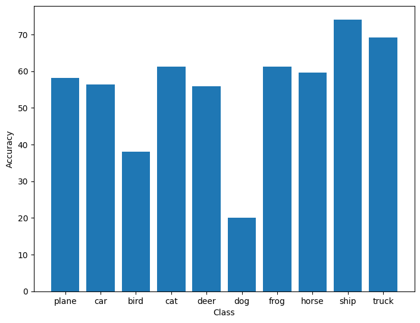

Dockerfile
Using existing docker images unfortunately only gets you so far. Especially, when you need to put models into production, it is very likely that you will need to encapsulate more logic within the image itself to integrate it in your existing processes.
In this section, you will learn the basic building blocks for generating docker images.
By convention the instructions for a docker image are stored in a text file called
Dockerfile (full reference).
This is not set in stone, so you can name it anything you like. However, it is usually best
to stick with the conventions that a community expects (just like with
PEP-8 in the Python community).
In order to make this section not just a hello world example, we will build an image that we can use for training and evaluating a PyTorch model on the CIFAR10 challenge. The Python script will also output a Matplotlib bar chart, displaying the accuracies of the classes.
Each of the following sections will introduce a docker command that will make up the final docker script for creating the image. Of course, we will also build and use the image, as well as push it out to make it publicly available.
Comments#
Before we dive into the actual docker commands, a quick note on comments. Just like with
any other programming language, it pays to comment your instructions. Especially, if you
need to work around quirks with some strange command-lines. Comments in docker files,
like with bash programming, are line comments and start with #.
FROM#
Docker images (just like ogres) are like onions, consisting of multiple layers. This makes it easy to add more functionality to existing images: reusing is better than recreating. This approach also preserves a lot of space.
The first (non-comment) statement in your Dockerfile needs to be the FROM statement, which tells docker the particular base image on top of which you want to build.
Reusing the image from our pull command in the Basics section, we get the
following initial statement:
ARG#
In some cases, your Dockerfile script might need to be parametrized for the build from
the outside. For defining such a build parameter (with a default value), you can use the
ARG instruction. Using the
--build-arg command-line you can override the default value.
The ARG syntax is simple:
You can also use ARG to make your FROM statement easier to read, but be aware of the
interaction between FROM and ARG.
Using ARG, we can pull out the version numbers from our original FROM statement and
put them in variables. Variables can be used in other statements via ${...}.
Here is the human-readable FROM statement:
ARG PYTORCH="1.6.0"
ARG CUDA="10.1"
ARG CUDNN="7"
FROM pytorch/pytorch:${PYTORCH}-cuda${CUDA}-cudnn${CUDNN}-devel
ENV#
In contrast to ARG, the ENV
instruction is persistent within the docker image and can be used to set environment
variables rather than build variables. If the variable should not be persistent in
the final image, as it might interfere with subsequent layers, then you should
consider using ARG instead.
One such environment variable is DEBIAN_FRONTEND, which changes the behavior of
apt-get (Debian tool to install packages):
The docker documentation on the ENV command lists alternative ways of specifying such an environment variable, for limiting the scope.
In the Interactive timezone prompt section section, you read why you might want to use this variable.
RUN#
Once you have set the stage with base image and variables, you can set about installing
the required software packages. For Debian/Ubuntu based systems, this usually involves
invoking the apt-get package manager and for Python pip/pip3. Executing commands
is achieved with the RUN command.
For installing matplotlib, which is not part of our base image, we can use:
You will notice the --no-cache flag, which is not something you would normally use.
In order to avoid downloading the same library over and over again, pip caches them
by default. This is not necessary for a docker image and just takes up more space.
But before you argue that you could just remove unwanted files at the end of your
docker image then you do not take into account that docker works in layers:
every command is basically a layer. Though a subsequent layer may remove files (and
you will not see them in the final image), they are still present in the layer that
they got introduced in.
Long story short: either always clean up within the same layer or avoid generating temporary files altogether.
Check out the following Best practices sections:
COPY#
Quite often, you will end up just needing little scripts within a docker image
to do the work for you (since all the libraries get installed via apt-get or pip).
For copying files or directories, you can use the COPY
command.
One thing that we have not talked about yet is the docker context. This context
includes all the files and directories that are on the same level as the Dockerfile.
The COPY command can only use files and directories that are within this context,
but not outside (e.g., going up in the directory structure).
You also need to be aware that the complete docker context will get sent to the docker daemon during the build process. So best not to have any unnecessary files and directories in the same directory. However, if it cannot be avoided for certain files/directories to be present you can use the .dockerignore file to exclude them.
As mentioned at the start, we want to train a PyTorch model and evaluate it.
Download the test.py script and place it next to
the Dockerfile that you are currently working on.
In order to include this Python script, use the following command:
The COPY command will automatically create directories if they are not present,
which is /opt/test in our case. Any existing file will get overwritten as well.
Not only Python scripts can be copied, you can also create executable bash scripts
that call your actual Python scripts and place them in /usr/bin. For our test.py
the bash script would look like this:
If your script supports command-line options, you can pass them through using "$@":
WORKDIR#
With the WOKRDIR command,
you can change the current working directory within your docker script. If the directory
does not exist yet, it will get created automatically. This eliminates the need
to use mkdir commands. In our case, we can just use the command to make the
docker container automatically start the prompt in the directory of our Python script
(/opt/test) when used in interactive mode:
Other useful commands#
Building the image#
With our Dockerfile now finally complete, we
are ready to kick off a build. After changing into the directory containing
the Dockerfile, you can use the build sub-command to perform the build.
Rather than using a hash, we can give it a name via the -t option (tagging it):
You should see similar output like the one below:
Sending build context to Docker daemon 260.6kB
Step 1/8 : ARG PYTORCH="1.6.0"
Step 2/8 : ARG CUDA="10.1"
Step 3/8 : ARG CUDNN="7"
Step 4/8 : FROM pytorch/pytorch:${PYTORCH}-cuda${CUDA}-cudnn${CUDNN}-devel
---> bb833e4d631f
Step 5/8 : ENV DEBIAN_FRONTEND noninteractive
---> Running in 71812ab36f5a
Removing intermediate container 71812ab36f5a
---> 77a27d586581
Step 6/8 : RUN pip --no-cache install matplotlib
---> Running in 10d85cc41a73
Collecting matplotlib
Downloading matplotlib-3.4.2-cp37-cp37m-manylinux1_x86_64.whl (10.3 MB)
Collecting kiwisolver>=1.0.1
Downloading kiwisolver-1.3.1-cp37-cp37m-manylinux1_x86_64.whl (1.1 MB)
Collecting cycler>=0.10
Downloading cycler-0.10.0-py2.py3-none-any.whl (6.5 kB)
Requirement already satisfied: pillow>=6.2.0 in /opt/conda/lib/python3.7/site-packages (from matplotlib) (7.2.0)
Requirement already satisfied: numpy>=1.16 in /opt/conda/lib/python3.7/site-packages (from matplotlib) (1.18.5)
Collecting python-dateutil>=2.7
Downloading python_dateutil-2.8.1-py2.py3-none-any.whl (227 kB)
Collecting pyparsing>=2.2.1
Downloading pyparsing-2.4.7-py2.py3-none-any.whl (67 kB)
Requirement already satisfied: six in /opt/conda/lib/python3.7/site-packages (from cycler>=0.10->matplotlib) (1.14.0)
Installing collected packages: kiwisolver, cycler, python-dateutil, pyparsing, matplotlib
Successfully installed cycler-0.10.0 kiwisolver-1.3.1 matplotlib-3.4.2 pyparsing-2.4.7 python-dateutil-2.8.1
Removing intermediate container 10d85cc41a73
---> 0361d66c3c44
Step 7/8 : WORKDIR /opt/test
---> Running in 14568b3fead5
Removing intermediate container 14568b3fead5
---> 7c1a8b7229d0
Step 8/8 : COPY test.py /opt/test/test.py
---> ed55c4fb8e62
Successfully built ed55c4fb8e62
Successfully tagged pytorchtest:latest
Running the image (interactive)#
With the image successfully built, you can now use it. For this you need to employ the RUN command.
Once the prompt appears, you can execute the test.py script:
While the script is executing, you should see output like this:
cuda:0
Downloading https://www.cs.toronto.edu/~kriz/cifar-10-python.tar.gz to ./data/cifar-10-python.tar.gz
100%|██████████████████████████████████████████████████████████████▉| 170369024/170498071 [00:13<00:00, 13670749.69it/s]Extracting ./data/cifar-10-python.tar.gz to ./data
Files already downloaded and verified
[1, 2000] loss: 2.173
[1, 4000] loss: 1.815
[1, 6000] loss: 1.659
170500096it [00:30, 13670749.69it/s] [1, 8000] loss: 1.557
[1, 10000] loss: 1.499
[1, 12000] loss: 1.449
[2, 2000] loss: 1.377
[2, 4000] loss: 1.356
[2, 6000] loss: 1.329
[2, 8000] loss: 1.315
[2, 10000] loss: 1.293
[2, 12000] loss: 1.264
Finished Training
GroundTruth: cat ship ship plane
Predicted: cat ship car plane
Accuracy of the network on the 10000 test images: 55 %
Accuracy of plane : 60 %
Accuracy of car : 65 %
Accuracy of bird : 29 %
Accuracy of cat : 44 %
Accuracy of deer : 54 %
Accuracy of dog : 41 %
Accuracy of frog : 52 %
Accuracy of horse : 68 %
Accuracy of ship : 78 %
Accuracy of truck : 63 %
170500096it [01:16, 2240182.93it/s]
At the end, the script will generate a bar chart plot and save it as /opt/local/figure.png:

If you look at the permissions of the generated image, you will notice that the owner
is root. Depending on your permissions on the host system, you might not be able to
remove it from outside the container. One approach is to change the owner using chown
(from within the container), but that can become tedious. Instead, see the following
Best practices section on how to best address this:
Congratulations, you have assembled, built and run your first docker image!
Running the image (non-interactive)#
Of course, you do not have to run the image interactively at all. After the initial development of your docker image and code, you can then use it in your production system.
For running it in non-interactive mode, simply remove the -it flags and
append the command that you want to run. In our case, this is:
The full command-line therefore looks like:
Optimizing an image#
As a final note, you should consider revisiting your Dockerfile once you have
verified that everything is working and optimize it. Optimizing entails:
- Combine
apt-getcommands in a singleRUNand remove caches at the end - Combine
pipcommands in a singleRUNrun and make sure that the pip cache is removed
Pushing the image#
Once you are happy with your image and you want to use it on another machine, you will need to push it out to a registry. Otherwise, you will not be able to use the image on another machine without having to re-build it (therefore defeating the purpose of reusable images).
For pushing an image, there are typically two sub-commands that come into play:
When building images locally, as we did above, the name is fairly irrelevant (pytorchtest).
However, when pushing an image to a registry (docker hub or your own), then
naming (aka tagging) an image requires a bit more thought. Assuming that you have
a user account on docker hub called user1234, then you could name your image like this:
That way, you still keep using your local image name pytorchtest, but you also
include the version of PyTorch, CUDA and cuDNN. The 0.0.1 at the end, is the actual
version of your image.
In order to push the image pytorchtest out to docker hub, you first need to give it
the proper tag:
And for pushing it out, use this command:
Once the push is complete, you will find this image at the following URL:
Depending on the number of images you have, you may have to search for the
pytorchtest:pytorch1.6.0-cuda10.1-cudnn7-devel-0.0.1 tag.